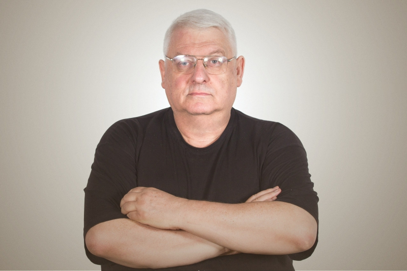
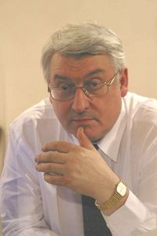

Многие считают, что основа мотивации – страх. Страшно остаться без куска хлеба и без крыши над головой, а еще страшно быть бедным, убитым… Это, конечно, сильный мотиватор, однако он, во-первых, не определяет поведение тех, кто «работает не за страх, а за совесть», а во-вторых, не является определяющим для большинства людей, с которыми я постоянно общаюсь, так как они являются способными и хорошо образованными молодыми людьми, обладающими востребованной во всем мире специальностью – они программисты. Для многих из них деньги не единственное, что их мотивирует, и появляются другие мотивы, которые и излагаются ниже.
Эти мотивы соответствуют моей жизненной позиции. Мне, конечно, могут напомнить слова лидера группы «Аукцыон» Л. Федорова: «Твои принципы – ты по ним и живи», но я надеюсь, что они будут полезны и другим людям, тем более что в «Заметках» Вы услышите различные «голоса». При этом отмечу, что «других я цитирую для того, чтобы точнее выразить свои мысли» (М. Монтень).
В «Заметках» не рассматриваются такие сильные мотиваторы, как секс и любовь, так как, по моему мнению, о них в литературе написано достаточно, а сколько будет написано еще… Вот, что по этому поводу написал З. Фрейд: «В основе всех наших поступков лежат два мотива: желание стать великим сексуальное влечение». Он во многом прав, но все в жизни не так просто, и у «народа» есть и другие мнения по этому вопросу.
У М. Мамардашвили было другое мнение: «У человека должен быть мотив – нота, пронизывающая все пространство и время его жизни. Мотив чаще всего связан с желанием, так люди являются желающими существами. При этом самое большое желание – это желание жить, чувствовать себя живым. Это одновременно и самая большая человеческая ценность». «Жизнь самое важное, что есть в жизни» (А. Пятигорский).
Цель «Заметок», в отличие от других изданий по этой или близкой тематике, не научить чему-то, а вдохновить на «великие» свершения, поэтому они и написаны в такой форме (в твиттерной или, как мне кто-то сказал, библейской). Всегда помню высказывание Б. Грасиана: «Хорошее вдвойне хорошо, если коротко», и стараюсь, чтобы каждая заметка «не содержала много букв». Однако их обычно несколько больше, чем допускается в твите.
Текст состоит из отдельных заметок, так как у молодежи появилась «привычка к огромному «рваному» потоку информации». При этом число заметок постоянно растет, так как выбранная форма и легкость публикации в Интернете новых редакций текста не позволяют остановиться. И еще. Опыт показывает, что средний размер заметки выбран правильно, так как знаю, что когда даже родственники интересуются чем-либо о тебе, выслушать в ответ полуторастраничный текст без окриков с моей стороны не способны.
Заметки появляются не только из новых для меня впечатлений, событий и текстов, но и, как амебы, – путем деления. «Заметки» напоминают фрагменты голограммы, по каждому из которых можно получить представление обо всей книге. Очень бы хотелось, чтобы о «Заметках» могли сказать, что-нибудь подобное: «Откроешь Кодекс на любой странице, и не могу – читаю до конца» (В. Высоцкий). И еще. Многое из изложенного ниже Вам известно, но наряду с «эффектом сказанного слова» существует и «эффект написанного слова», и я думаю, что сколько бы заметок Вы не прочли, что-то важное для себя в них Вы все-таки найдете.
Так что, кому интересна рассматриваемая тема, терпите, сколько сможете, или перейдите к коротким версиям книги, опубликованным по адресу http://is.ifmo.ru/belletristiс/. В более доступной форме – по несколько заметок в день – книга публикуется в группах с тем же названием в социальных сетях В Контакте и Facebook, что позволяет проводить практически ежедневную мотивацию читающих. И еще. Я не был в «шкуре» людей с ограниченными возможностями, поэтому я им не советчик. Не советчик я и для верующих... Книгу, видимо, стоило назвать «Заметки о мотивации мужчин», так как для большинства женщин характерны мотивы, отличающиеся от рассматриваемых. Но бренд ? сформировался, так что – вперед.
Начну с себя. Мне 62 года (теперь скоро 69), и для того, чтобы практически каждый день (кроме воскресений, а в настоящее время уже и суббот) уходить на работу раньше восьми утра и возвращаться после 23 часов, надо постоянно себя мотивировать. При этом я понимаю, что, просыпаясь ранним, темным, холодным, зимним утром можно пожалеть себя несколько минут. Затем я вспоминаю свой «стих»: «За что такое наказание – такое раннее вставание», встаю и иду на работу, для того чтобы успеть сделать в жизни чуть-чуть больше.
Те же проблемы возникают у многих, но все их решают по-разному: кто-то поворачивается на другой бок, а кто-то говорит себе, как старший тренер сборной России по художественной гимнастике: «На место, Винер!». Недавно один мой практически одногодок (декан факультета информационных технологий одного из вузов) спросил меня, как я заставляю себя так работать, не являясь, в отличие от него, начальником, которого на достижение результатов в основном мотивируют – побуждают к действиям, внешние обстоятельства. Попытаюсь ответить.
Я всегда мотивировал себя тем, что если постоянно не «упираться», то ничего в жизни и не добиться. В последние годы, когда стали появляться некоторые достижения, я отчетливо понял, что, при наличии здоровья и удачи, успех прямо пропорционален вложенному труду или приложенным усилиям. Этим себя и мотивирую – провожу внутреннюю мобилизацию, так как знаю, что «побеждает тот, кто побеждает себя». При этом помню, что «только Вы сами можете себя мотивировать». «Мотивируйте себя всеми правдами и… неправдами». Когда Вам трудно, говорите себе: «Мы преодолеем», перефразируя слова известной песни борцов за гражданские права в США. Они многое преодолели. Неужели и Вы не сможете?
«Упираться» следует «и в горе, и в радости». В «горе» – понятно, а если не «упираться» в «радости», то через некоторое время может наступить и «горе». «Откуда берутся конфликты и вообще все плохое – это понятно. Откуда берется хорошее – вот в чем вопрос. Все состоит из плохого, и если ничего не делать, не работать над собой, то будет только плохое, хорошего не будет» (Д. Крымов). Помните, что «только зло растет само собой, а добро нужно строить каждый день, так как оно разрушается на глазах» (Б. Паскаль). И знайте, что «мы беззащитны перед злом – даже когда сами его совершаем» (С. Лукьяненко). А вот, как предлагает бороться с этим Б. Гребенщиков: «В битве со злом взвейся сокол козлом!».
«Зло происходит само, добро требует усилий. Если бы зло не было бы соблазнительным, люди могли бы избежать огромных страданий, которые они доставляют друг другу. Большинство злодеяний в Новое время совершено во имя вечных ценностей – демократии, справедливости, прав человека и иногда идеологического мусора» (А. Кончаловский). И помните, что «теория меньшего зла не отменяет то, что и меньшее зло все же зло» (В. Гавел).
Иногда, правда, бывает, что без мотивации не добиться даже плохого: «Приговоренного к смерти привели на электрический стул. Однако заключенный не смог туда втиснуться. Тогда его посадили на жесткую диету. Время шло, а он не худел. На вопрос начальника тюрьмы: «В чем дело?», приговоренный ответил: «Мотивации не хватает» ?.
Еще о мотивации в этой области. На этот раз материальной. «Во Франции палачам предоставляли прекрасные возможности для заработка. Это положительно сказывалось на качестве предоставляемых ими услуг. По крайней мере, казнимые умирали быстро и без лишних страданий. А вот в Англии на исполнителях приговоров экономили, и плата за их труд была жалкой. Поэтому более криворуких палачей не было во всей Европе. Англичане вербовали в палачи людей с улицы и даже уголовников, причем специального обучения никто из них не проходил. Например, одному из них понадобилось три удара, чтобы отделить голову казнимого от тела».
Добавим несколько слов о мотивации похуданием. «Я очень хочу похудеть, чтобы срочно выйти замуж», – сказала девушка врачу-диетологу, который посоветовал ей не торопиться с замужеством. На что девушка ответила, что терпеть больше не может, так как очень хочет … есть.
Теперь о перемотивации в спорте. «Как-то читал книгу о советской пловчихе, которую гипнотизировали перед каждым заплывом. Ей потом казалось, что за ней плывет акула. Правда, после 50 метров она вылетала из воды и убегала куда-то. Мотивация все-таки тонкий момент, здесь главное – не переборщить» (Ю. Клопп). Кстати, «переборщить» говорят часто. Интересно, что же значит слово «недоборщить»?
«Мотивация – это проблема движущих сил поведения человека. Это побуждение к действию определенным мотивом, таким как потребность, побуждение, влечение, склонность, стремление и т. д.» (Х. Хекхаузен). Мотивация определяет выбор между различными вариантами деятельности. И помните, что «если мы говорим, что у нас нет выбора, то значит, что выбор уже сделан» (Ф. Искандер).
«Мотивация – это способность мобилизовать резервные возможности человека и побуждать его к действиям. Она связана с силой убежденности. Мотивация делает невозможное возможным, так как она придает силу и окрыляет. Люди, у которых есть сильный мотив, которые хотят достичь определенной цели, могут мобилизовать силы, о существовании которых прежде даже не подозревали. Они в состоянии развить свои способности и даже превзойти их. Харизма и мотивация обычно связаны между собой, так харизма всегда включает в себя способность мотивировать людей» (Н. Энкельман).
Теперь несколько шуток. Когда я не очень молодому человеку с первого звонка нашел первого оппонента, что сейчас непросто, он сказал: «Вы можете все!» Я поправил его: «Нет. Только то, за что берусь». Еще шутки юмора: «Не парься – за тебя это сделает парсер», «Любишь купаться – люби и плавочки носить» и, наконец, «Работал по совместительству на одном предприятии. Меня как-то спросили сколько я там получаю. «Слезы», – ответил я. Но чуть-чуть подумав, добавил: «Они тоже нужны, так как без них «глаза» сохнут».
«У разных людей разная мотивация. Для кого-то это деньги, для кого-то продвижение по службе, для кого-то – признание. Для одних самыми эффективными стимулами являются страх и гнев. На других это не действует, для них стимул – обучение или возможность повлиять на что-то, увидеть результаты своего труда. Многих вдохновляет захватывающая картина будущего» (Л. Герстнер). Эти, а также многие другие аспекты, связанные с мотивацией, будут рассмотрены ниже. Помните, что не только недостаточная мотивация, но и перемотивация обычно не повышает эффективности (Закон Йеркса-Додсона).
«Бывают люди, которые необычны и своим поведением вызывают удивление и некий трепет, а возможно, и раздражение. О человеке, обладающего таким даром, говорят, что обладает харизмой или даром» (Л. Жмудь). «Легко быть харизматичным, когда вокруг тебя гримеры, костюмеры, осветители и режиссер, который отбирает только лучшие дубли» (Д. Айронс). Попробуйте иметь харизму без всего этого.
«Много веков человечество размышляет о человеке, не зная, откуда он приходит в этот мир и куда из него уйдет» (А. Максимов). «Зачем я существую, и почему такой ограниченный срок? Почему потом я умру? Для чего мне эта жизнь дана? Как я ее использую? Человек рождается непонятно зачем, и непонятно почему и когда должен умереть. И этот небольшой промежуток времени он должен заполнить. Чем?» (К. Гинкас).
«Самыми мотивирующими в моей жизни оказались три слова: «Когда-нибудь ты умрешь». Я не пытаюсь Вас пугать, это суровая правда. У вас есть лишь одна жизнь и один шанс стать счастливым. Эти слова должны каждое утро мотивировать Вас на новые свершения. Не позвольте себе стать стариком, который жалеет о прожитых годах. Перестаньте оправдываться и начните делать себя счастливым» (Г. Вайнарчук).
«Мы всего живем «пять минут» на этом свете и зачем-то начинаем ругаться и спорить, а ведь в спорах не рождается истина. Зачем порождать обиды и злость, создавая вокруг себя ад? От чего тоска? От того, что делом не заняты ни руки, ни ноги, ни голова, ни сердце. Если сердце в обиде, зависти, злости, то там нет места ни для чего хорошего. Где Вам было хорошо? Там, где было трудно. Если у Вас горе, то его надо сравнивать с еще большим горем, которое сейчас есть у людей. Это помогает» (П. Мамонов). И помните, что «время жизни – это шанс выразить твое пребывание здесь самым рискованным, самым творческим способом, какой ты можешь вообразить» (Р. Бах).

Он продолжает. «Говорить надо быстро, тему менять резко. Они не набросятся, конечно, и не будут срывать урок, но случится то, что гораздо хуже: им станет неинтересно. Если контакта нет, надо менять профессию. Но если контакт есть – ты получаешь все бонусы. Тебя любят, тобой интересуются как минимум полсотни человек. Ты среди молодых, и возрастне чувствуется. Ты всегда подзаряжен их энергией, их серьезным отношением к жизни, их важными вопросами – не здоровьем и не бабками, а «любит – не любит» и «что будет после смерти». У меня во многом такое же ощущение от преподавания. И помните, что «авторитет перед учениками добивается или не добивается педагог, а вот престиж профессии долно обеспечить государство».
Еще про возрастную пропасть. «А. Фергюсон закончил тренировать в 71 год. Удивляюсь, как этот человек, который столько всего выиграл, после очередной победы умудрялся находить мотивацию. Он с каждом годом становился старше, и, грубо говоря, более сытым, а команду всякий раз омолаживал. Когда между игроком и тренером разница 10–15 лет, общий язык найти не так сложно, а если эта разница лет в 40–45? Но Фергюсон находил ключи к молодым! Если бы мы встретились, я бы спросил его, как это он это делал?» (Л. Слуцкий). У меня та же проблема, и я готов рассказать Слуцкому, как я ее решаю ?.
Теперь о другом футбольном тренере, который долгие годы ничего не выигрывал. Тренер «Лестер Сити» Клаудио Раньери, которому 64 года, возглавил эту команду после того, как она еле-еле осталась в английской премьер-лиге. Он до этого не выигрывал ни одного титула, ни в одной команде, несмотря на то, что работал в таких клубах, как Наполи, Фиорентина, Валенсия (два раза), Атлетико, Челси, Парма, Ювентус, Рома, Интер, Монако. Над ним смеялись и издевались. Великий тренер Ж. Моуриньо, который в свое время сменил Раньери на посту главного тренера «Челси», неоднократно называл итальянца неудачником.
А вот, что Моуриньо говорил о Раньери. «Я учил итальянский по пять часов в день в течение нескольких месяцев, чтобы общаться с журналистами и болельщиками, но меня все равно упрекали в том, что я отношусь к ним недостаточно уважительно. Тот же Раньери после пяти лет работы в Англии с трудом мог поздороваться на английском». Еще он назвал Раньери стариком. В чемпионате Англии 2015-2016 гг. «Лестер» победил! В общем, Раньери выстоял! А где теперь Моуриньо?
Сезон 2014-2015 гг. складывался для «Челси» крайне неудачно: команда проиграла девять из 16 матчей. 17.12.2015 г. после 16-го тура, по итогам которого команда заняла 16-е место в турнирной таблице, Моуриньо был уволен с поста главного тренера. Символично, что он был уволен после поражения от «Лестера»!
Помните, что «знать, что знаешь то, что знаешь, и знать, что не знаешь того, чего не знаешь, – вот истинная наука» (Китайская мудрость). И еще. «Если некто рассказывает тебе о том, что ты уже знаешь – молчи, потому что, может быть, он в своем рассказе добавит нечто, чего ты не знал. Кроме того, он получает удовольствие, рассказывая тебе» (Х. Хафец, «Книга о человеческих достоинствах»).
А теперь совет. В рабочее время не играйте в футбол (не являясь профессиональным футболистом) и не ходите в баню (не являясь профессиональным банщиком), даже в тех случаях, когда разрешает начальство. Это развращает и изменяет Ваше отношение к времени как к невосполняемому ресурсу. «Много ли людей придают времени какую-либо цену, уважают и ценят свои дни, понимают, что с каждым днем они умирают. Все не наше, все чужое, только время наше собственное» (Сенека). И помните, что «если Вы любите жизнь, то не растрачивайте время, ибо из него она и состоит». «Поскольку любой час засчитывается в срок жизни, они все равноправны, и за каждый надо отчитаться» (Д. Гранин).
Еще на ту же тему. При социализме нас часто посылали в колхозы и на овощные базы. Это так же развращало людей, как и указанная в предыдущей заметке деятельность. Поэтому, когда одному моему знакомому надо было куда-то уйти с работы, он без сожаления и неудобства делал это, считая, что с этого момента он мог быть послан в колхоз или на овощную базу, от которых пользы для работы было бы не больше, чем от того, чем собирался заняться.
Если в рабочее время, которое для многих является самым продуктивным, у Вас имеется возможность заниматься не работой, а чем-то иным, то займитесь самореализацией или самообучением в Вашей профессиональной деятельности и начните, например, писать статью или учить новый язык программирования. По этому поводу П. Грехэм пишет: «Вы не должны сидеть в кофейнях с инвесторами в середине дня, когда Вы могли бы отлично работать. Вместо этого Вам следует заняться более важными вещами, например, оптимизацией кода. С инвестором поговорите позже».
А вот как поступал Э. Бурритт (его называли Ученый Кузнец), типичная запись в дневнике которого была следующей: «60 строк на иврите, 30 – на датском, 10 – на богемском, девять – на польском, 15 названий звезд и 10 часов ковки». И знайте, что «если много работаешь, то наступает момент, когда вода начинает закипать» (Р. Фальк).
«Люди говорят: «Уходит время». Время говорит: «Уходят люди» (Р. Нуреев). Помните, что «одно из замечательных свойств времени – это то, что его нельзя потратить заранее. Знайте, что в любой момент Вы можете оказаться в ситуации, где время расходуется впустую. Поэтому всегда носите с собой книгу, которая поможет Вам не терять его даром. Помните, что книги позволяют Вам общаться практически с любым великим человеком, и грех этим не воспользоваться» (Р. Шарма).
Он продолжает. «То каким человеком Вы станете во многом определяет два фактора: люди, с которыми Вы общаетесь, и книги, которые Вы читаете. Одной идеи из правильной книги может хватить, чтобы преобразовать Вашу личность и личные отношения, устроить подлинную революцию в Вашей жизни. Помните, что умнейшие люди человечества, написавшие книги, только и ждут, чтобы со страниц своих книг поделиться с Вами мудростью». И еще. «Книги – это друзья, которые не умирают, никогда не предают и всегда с тобой».
«Я верил прежде и не сомневаюсь теперь, что невероятный подъем Америки в первые полтора века ее существования в большой степени был предопределен целеустремленностью группы уникальных людей, писавших книги и читавших лекции об успехе и о том, как его достичь. Каждому последующему поколению детей в школе и дома на примерах из этих книг доходчиво разъясняли, как воплотить мечту в лучшем ее проявлении» (О. Мандино).
Он продолжает. «Во второй половине прошлого века произошли изменения к худшему – люди перестали прислушиваться к прежним гуру успеха, чей глас стал подобен гласу вопиющего в пустыне. Появились люди, которые стали рассказывать как добиться успеха за месяц, а то и еще быстрее. Тот, кто пробовал эти советы, разочаровывался, и у них пропадал интерес к этой тематике. Однако потом вновь стали появляться нормальные книги об успехе, мотивации и самопомощи, но все равно возникает вопрос: где новые Н. Хиллы и Д. Карнеги?»
А вот другое мнение о чтении. «Назвать моим хобби чтение книг я не могу. У меня бывает желание почитать, бывают дни, когда я специально открываю художественные книги, а потом остываю надолго. Это наверное потому, что сценариев человеческой жизни не так много» (А. Галицкий). Мне кажется, что если читать документальные книги, то сразу станет интереснее.
«Ни люди, ни государство не могут жить без ясной цели. Двадцать лет дискуссий о национальной идее прошли впустую. Многие считают, что придумать ее невозможно. А может, еще попробовать? Все-таки важный вопрос – зачем живем?» (Б. Клин). «Мы друг перед другом нос дерем, а жизнь знай себе проходит. Когда я работаю, без устали, тогда мысли полегче, и кажется, будто мне тоже известно, для чего я существую. А сколько, брат, в России людей, которые существуют неизвестно для чего» (А. Чехов).
«Когда оглядываешься на прожитые дни, кажется, что они пролетели за один миг. Время не медлит, и никто здесь надолго не задерживается» (Р. Бах). Писатель В. Распутин считал, что знает ответы на эти неразрешимые вопросы: «Жизнь дана человеку, чтобы испытать его, а смерть – чтобы ценил время».
Помните, что «как мы проводим свой день, именно так мы проводим и свою жизнь» (Э. Диллард). И еще. «Жизнь – это не те дни, что прошли, а те – что запомнились» (Г. Маркес). «Каждый приходит сюда с ящиком инструментов и комплектом проектной документации на построение собственного будущего, но далеко не каждый помнит, куда он все это засунул» (Р. Бах).
На эти вопросы каждый должен ответить для себя сам. Стараюсь ответить и я. Теперь мне мотивировать себя стало легче, чем в молодости, так как я понимаю, что не так много осталось времени. При этом хочется успеть еще что-то понять и сделать, так как смысл жизни, видимо, в том, чтобы «определить замысел Бога о тебе и помочь этому замыслу исполниться». Поэтому «ложась вечером спать, я говорю себе: вот и еще один выигранный день» (П. Гоген). И совет. «Для того чтобы ложиться спать с миром в душе, не делайте за день того, о чем будете сожалеть» (Филди).
Каждый день «необходимо создавать себя сначала» и «хотя бы немного изменять мир к лучшему». Помните, что «день – это маленькая жизнь, и ее надо прожить так, будто Вы должны умереть сейчас, но Вам неожиданно подарили еще сутки» (М. Горький). «Каждый день следует проводить так, как будто он наполняет и исчерпывает целую жизнь. Не смотрите на этот свой день, как на последний, но проводите его так, что он мог бы быть и последним» (Сенека).
«Живи так, будто этот день – последний, и однажды так оно и окажется». Эта фразу произносят в фильме В. Аллена 2016 г. «Светская жизнь». У А. Карлина она имеет продолжение: «И ты будешь вовсеоружии». «Беритесь за дело основательно и делайте все что можете , так как любой день может стать последним» (Э. Кеннеди). Интересно, что «все строят планы, но никто не знает, проживет ли он до вечера» (Л. Толстой).
Естественно, что не все с этим согласны. Например, писатель А. Мелихов написал, прочтя эту заметку: «Мне кажется ошибочным требование жить так, будто этот день последний, – мы бы пошевелиться не смогли от ужаса, мы живы иллюзией бессмертия и желанием быть красивыми», а Е. Вяхякуопус считает, что «никто не может жить так, будто в последний день – только приговоренные». Что я могу ответить? Во- первых, это предложил Сенека, а во-вторых, я, как и Кеннеди, практически всегда помню, что «любой день может стать последним» и поэтому стараюсь успеть еще что-то сделать (например, написать эту заметку), хотя понимаю, что это во многом бессмысленно. Но ничего не делать в этой ситуации, мне кажется, труднее.
«Перспектива рано умереть заставила меня понять, что жизнь стоит того, чтобы ее прожить» (С. Хокинг). Знайте, что «смерть – лучшая мотивация для того, чтобы хоть что-то сделать в жизни» (М. Фассбендер), и помните, что «самое большое наше заблуждение состоит в том, что у нас еще много времени». Интересно, что «предел человеческих возможностей чрезвычайно скучный и разочаровывающий – смерть» (У. Эко). И еще. «Не судите человека, пока на заколотили крышку его гроба, так как и в самый последний момент он можно успеть наделать много глупостей» (Ли Куан Ю).
«Большинство из нас живет так, будто мы вечны, и у нас еще уйма времени. Но мы смертны, и поэтому каждый день на Земле важен. Это отражение Вашей жизни в миниатюре. Поэтому не тратьте попусту ни одного дня. Живите так, будто каждый день – последний» (Р. Шарма). «Жизнь для меня – факел, дарованный мне лишь на короткое время. И перед тем как отдать его будущим поколениям, я должен зажечь этот факел как можно ярче» (Б. Шоу).
«Учись так, как будто тебе предстоит жить вечно. Живи так, как будто тебе предстоит умереть завтра» (О. фон Бисмарк). «Живи полной жизнью. И не важно, сколько дней в твоей жизни. Важно, сколько жизни в твоих днях». Живите так, чтобы Вы могли сказать о себе, как Э. Джонс: «Я, в отличие от многих других, всегда знал, зачем я здесь» (Э. Джон). Кстати, мой научный руководитель В. Артюхов предлагал сделать значок для совещаний: «Зачем я здесь?» ?.
А вот и ответ на этот вопрос: «Вы здесь не для того, чтобы сводить концы с концами. Вы здесь для того, чтобы дать миру возможность жить полнее, мечтать смелее и обрести более ясную надежду достичь своих целей. Вы здесь, чтобы обогатить мир» (В. Вильсон). И еще. «Жизнь – состоит из нескольких мгновений и определяется числом прикосновений к Богу. Успешная жизнь – это когда твое любимое дело проникается любовью к тебе. Это значит, что ты заслужил его любовь. Единственный способ для меня наслаждаться жизнью – работать каждый день до часа, до двух ночи. У тебя же нет выходных, когда ты влюблен: ты же не берешь отгулов у любимой девушки» (К. Райкин). Помните, что «жизнь – это не то, что с нами происходит, а то, как мы поступаем, когда с нами что-то происходит…» и что «жизнь – это путь от решения одной задачи к решению другой» (С. Спивакова).
«Никому не удается добиться успеха, о котором он не смел и мечтать, если он не смеет мечтать об успехе» (Р. Чарелл). Создать что-либо может создать каждый, но вот добиться успеха может только тот, кто имеет несгибаемое намерение осуществить свою мечту. «Надо иметь большую мечту, чтобы не упустить ее из виду, когда гонишься за ней» (О. Уальд).
«Чтобы взлететь, нужно иметь бесшабашную мечту. Если бы я не хотела стать президентом, я бы не стала вице-спикером. Если бы я хотела быть вице-спикером, я бы стала только депутатом. А если бы у меня было депутатство ради депутатства, а не ради того, чтобы изменить страну, то я вообще не победила бы» (И. Хакамада).
«Мечтай так, как будто будешь жить вечно. Живи так, как будто завтра умрешь» (В. Цой). И еще. «Если человек уверенно движется к своей мечте и стремится жить так, как он себе представил, то успех придет к нему» (Г. Торо). «Нам есть куда расти. У нас есть мечта. Отними у человека мечту, и он не будет знать куда идти» (С. Хан). «Когда свершается мечта, не знаешь, что говорить. Остается только удивляться и благодарить Бога» (О. Табаков).
«Если хочешь что-то сказать – говори сейчас, а если хочешь что-то сделать – делай тоже сейчас. Возможно «завтра» для этого не будет». Помните, что нет никакого завтра, есть только сейчас! «Завтра никогда не бывает сегодня. Разве можно проснуться поутру и сказать: «Ну вот, сейчас, наконец-то, завтра»? (Алиса из страны чудес). «Кто сказал, что жизнь справедлива? Разве справедливо, что мы временно попадаем на эту землю и нам, ко всему прочему, дают понять, что все мы рано или поздно умрем?» (Л. фон Триер). Знайте, что «никто из этой жизни не выберется живым – поэтому старайтесь жить на полную катушку».
«Трагедия человечества состоит в том, что люди очень мало живут. По идее, человек должен определиться с тем, кем ему быть, лет в 60, когда наберется жизненного опыта, а ему приходится это решать лет в двадцать или еще раньше» (Д. Данилов). «В 20 лет мы должны определить свой жизненный путь, понять, кем мы хотим быть, и как этого добиться» (Г. Шихи). «Молодые часто люди не знают чего хотят, но полны решимости добиться этого» ? (Ф. Феллини). И еще важно помнить, что «многие люди подобны колбасам: чем их начинят, то и носят в себе» (К. Прутков).
«Профессор Г.Н. Дульнев из Университета ИТМО говорил, что на юбилее в 50 лет человек отчитывается перед людьми, в 60 – перед собой, а в 70 – перед Богом». Похоже он был прав. В конце интервью В. Познер часто задает вопрос: «Чтобы Вы сказали, если бы оказались перед Богом?» На это Д. Смирнова ответила: «Спасибо большое, было очень интересно». Я присоединяюсь к ее словам.
«Один лишь факт того, что ты живешь, что приходит еще одно утро, и ты встаешь, дышишь, можешь пройти по земле – это достойно благодарности» (Д. Депп). «Жизнь коротка, даже если доживешь до девяноста. Живи на полную катушку. Цени каждый миг, каждый час, каждый день, потому что не успеешь и глазом моргнуть, как все кончится» (Б. Уиллис).
«Надо беречь каждое мгновение, не растрачивать себя по пустякам. В один миг все может испариться, а дальше будет только пустота» (О. Емельянова). И еще. «Поэзия, следи за пустяком, / Сперва за пустяком, потом за смыслом» (А. Кушнер).
«В начале карьеры И. Маск пришел к выводу, что человеческая жизнь коротка. Если по настоящему осознать этот факт, становится ясно, что работать надо изо всех сил. Поэтому он недосыпает неделями, и люди поражаются, каким истощенным он выглядит». И еще. «Все, что делает Маск, связано с большим риском». Теперь вопрос: «Ты отдал жизнь ради того, чтобы стать именно тем, кем являешься сейчас. Оно того стоило?» (Р. Бах). Я отвечу: «Да».
«Проблема в том, что Вы думаете, будто у Вас есть время» (Будда).Это не так. «Каждый день – подарок Бога. Надо быть благодарным за каждый час и насыщать его до предела. Уметь пересиливать усталость, обиды и боль» (Д. Лихачев). «Я, как и все мы, пришел в этот мир на несправедливо короткий срок, и поэтому произношу слово и ощущаю понятие Вечность, как заклинание, как протест против смерти» (М. Казиник). Знайте также, что Н. Тимофеев-Рессовский писал: «Жизнь тяжела, но, к счастью, коротка». И помните, что «жизнь очень коротка, в ней глупо быть несчастным» (Д. Гранин).
«Когда Платон был на смертном одре, его друг попросил вкратце подытожить величайший труд его жизни – «Диалоги». Платон ответил: «Подготовка к смерти». «Мудрые люди постоянно напоминают себе, что каждый день может стать для них последним. Нужно проживать каждый день так, словно он завершает Вашу жизнь. Самое грустное в жизни – не то, что придется умереть, а то, что нам не всегда удается жить в полном смысле этого слова, пока мы живы. И помните, что важно не то, что мы получаем, а то, что оставляем после себя» (Р. Шарма).
Он продолжает: «Начинать создавать наследие надо уже сегодня, а не через десять лет, когда у тебя «будет больше времени. Поразмышляйте над тем, что Вы хотите создать за свою жизнь, а главное – какой дар Вы хотели бы оставить миру, когда Вас не станет. Что будет стоить Ваша жизнь, когда Вы умрете? Знайте, что, покидая этот мир, Вы возьмете с собой лишь совесть. И помните, что всем нам необходимо прожить жизнь так, чтобы превзойти самих себя». И еще. «Мир – хорошее место, и за него стоит драться, и мне очень не хочется его покидать» (Э. Хэмингуэй). «Человек вообще начинает понимать, как устроен мир, к тому моменту, когда ему пора его покидать» (С. Белоусов).
«Пока я пыталась взбудоражить мир своим разумом, тело подвело меня. Мне оставалось полгода- год. Я стараюсь обогнать смерть, выбраться вперед, обернуться и увидеть ее. Я нашла менее консервативного врача – не могла опустить руки. Я превратилась во Вьетнам – меня обстреливают химическим оружием. Моя болезнь проникает все глубже – организует колонии. Она заставляет меня закрывать рот. Мое тело отзывается громче меня. Не хочу ощущать себя жертвой, и хотя приходилось слушать врачей о моей безнадежности, я надеялась на силу своей исключительности. Я боролась за свою жизнь. Я очень хотела жить. Я говорю это без стеснения. Я боролась...» (С. Зонтаг). Благодаря врачу и собственной силе воли она победила!
Потом она столкнулась со смертельной болезнью еще раз. «Я решила бороться со смертью до последнего вздоха. Борьба, борьба и еще раз борьба. Смерть стала реальностью. Она противоположность всего» (С. Зонтаг). На этот раз Зонтаг не смогла победить, но помните, что «со смертью все не кончается» (И. Бродский). И еще о смерти. «Я все чаще думаю о приближающейся смерти и размышляю о том, что будет после нее. Я не только думаю, но и чувствую кожей, что я каким-то образом должен быть к ней подготовлен, и точно не знаю, почему не хочу умирать, но ужасно не хочу» (В. Гавел).
«Я бы хотел, чтобы человечество задалось одним простым вопросом: «А что, у нас действительно есть будущее?» Потому что, как мне кажется, его у нас нет, хотя люди очень боятся об этом думать» (Д. Айронс). И еще. «Смерти я не боюсь, но страшная вещь – допущение смерти всего человечества. Вот это единственное, что пугает. Собственная смерть не проблема именно потому, что мы надеемся, что род человеческий продолжится. А если все не имеет продолжения, тогда с этим очень трудно внутренне освоиться. К этому я, пожалуй, не готов» (В. Иванов). Я тоже.
«Люди подлинно состоявшиеся в жизни никогда не стремятся быть как все. Они постоянно стараюся превзойти самих себя, и им не надо соревноваться с другими. Соревнуясь с сами собой, они стараются каждый день становиться лучше, чем вчера, не позволяя общественному мнению диктовать им, что делать, и чего не делать. У них хватает храбрости слушать голос своего сердца. Для этого нужна недюжинная сила. Помните, что быть как все – большое искушение» (Р. Шарма). «Все унифицированное возникает от давления общественного мнения, усилившегося с появлением социальных сетей. Это глупость. Ни там и ни тому учатся. У многих это болезнь головы. Выход один – если можете, больше думайте сами» (С. Шнуров).
Конкуренция не всегда бывает полезной. Вот к чему она приводит в высшей школе США. «По мере продвижения учащихся в верхние строки «турнирной таблицы», ситуация становится все хуже и хуже. Лучшие студенты уверенно карабкаются вверх до тех пор, пока непрерывно усиливающаяся конкуренция не выбьет из них детские мечты. К моменту поступления в колледж студент уже лет десять пестует свое на изумление многостороннее резюме, готовясь к совершенно непонятному будущему. Он готов ко всему, что может ожидать его в будущем, – и ни к чему конкретному» (П. Тиль).
Он продолжает. «Таким образом, высшая школа – это место, где ребята, лелеющие в старших классах школы наполеоновские планы, ожесточенно соперничают с такими же умниками и умницами за право строить типичную карьеру консультанта по управлению или инвестиционного банкира, а за привилегию сделаться конформистами студенты или их родители платят сотни тысяч долларов». И еще о том же. «Мы не можем научить людей сотрудничать и работать в команде, если в течение всей учебы они выступают как одиночки, которые соревнуются друг с другом» (П. Лукша).
«Обратный подход – определенность взглядов на будущее – формирует твердость в убеждениях. Вместо того, чтобы стремиться стать многогранной посредственностью и считать себя «гармонично развитой личностью», человек с твердыми убеждениями ставит перед собой цель – и стремится к ней. Вместо того чтобы пытаться стать таким, как все, он старается стать выдающимся специалистом в чем-то одном» (П. Тиль). «Я решил, что самое важное в жизни – иметь цель и стремиться к ней. Все остальное еще хуже» (А. Венгер). И помните, что «если Вы хотите прожить счастливую жизнь, то свяжите ее с целью, а не с людьми или вещами» (А. Эйнштейн).
«Ты будешь счастлив только с тем, с кем сможешь быть самим собой».«Быть самим собой в мире, который постоянно пытается сделать из Вас что-то другое, – величайшее достижение» (Р. Эмерсон). И еще. «На пути к вершине не потеряйте себя» (Д. Уэлч). Знайте, что «человек начинает жить лишь тогда, когда ему удается превзойти самого себя» (А. Эйнштейн).
«Когда человек появляется на свет он олицетворяет вопрос, на который его жизнь должна ответить» (К. Юнг). «Родиться – это чудо, и большой вопрос состоит в том, что Вы будете делать с жизнью теперь, когда она у Вас есть. Потратите ее впустую? Или сделаете с ней что-то интересное?» (Далай-Лама). «Люди обычно считают чудом хождение по воде, а я думаю, что чудо – хождение по земле» (Тик Нат Хан). И еще. «Не теряйте времени, его и так осталось мало» (С. Шклюдов).
Иногда мотивирует не то, что жизнь скоро кончится, а то, что может исчезнуть возможность заниматься любимым делом: «Я стал значительно старше и понимаю, что времени, которое я могу провести в большом спорте, осталось совсем немного. Осознание этого и есть основная моя мотивация» (В. Ан, шестикратный олимпийский чемпион).
Что мотивирует очень богатых людей? Приведу ответ одного из них. «Бог неравномерно раздает таланты и дары от рождения. Задача любого человека максимально полно их использовать. Если человеку дано что-то, он обязан это реализовать. Большой грех ничего не делать – это богопротивное дело. Ты должен свои таланты и качества как-то реализовать, чтобы они приносили пользу тебе, окружающим и миру в целом» (М. Фридман).
Он продолжает. «В иудаизме есть понятие «чинить мир» – каждый человек обязан чинить его, делая лучше. Мир несовершенен, поэтому его в меру своих возможностей (таланта, здоровья и т. д.) все время надо подкручивать, а то и чинить. При этом мне самому интересно, а способен ли я на какой-то следующий шаг. Место в Forbs ублажает мое самолюбие, но меня больше интересует внутренний спор с самим собой с целью определения на что я все-таки способен».
Что еще может мотивировать человека «попроще»? Многие считают – деньги. Более того, так как цель бизнеса – получение прибыли, то и руководители многих компаний считают, что их миссия – зарабатывание денег. Мне повезло – я всю жизнь проработал в успешном предприятии военно- промышленного комплекса и таких слов никогда не слышал – ни при социализме, ни даже теперь.
Именно работа на этом предприятии с весьма жесткой системой прихода и ухода и по сей день является одним из основных факторов, которые мотивируют меня к практически активной ежедневной ранней трудовой деятельности. А теперь вопрос: «Для того, чтобы преуспеть в бизнесе нужен необычный талант, но если Вы обладаете таким талантом – зачем тратить его на бизнес?»
«Самодисциплина важнее показателя умственных способностей для прогноза о том, кто добьется больших успехов в жизни. Десятки исследований показывают, что сила воли – это самая важная привычка, обеспечивающая личный успех. Подростки с высоким уровнем самодисциплины превосходят своих более импульсивных сверстников по всем показателям в учебе.
Самодисциплина важнее для показателей в учебе, нежели коэффициент умственного развития» (Ч. Дахигг). Помните, что сила воли и характер – самое важное в достижении успеха, а «величия не достичь без нацеленности, увлеченности и самодисциплины» (Г. Фосдик).
Дисциплина и ответственность воспитывают в человеке самодисциплину, а композитор И. Стравинский говорил: «Музыкант, как обычный служащий, должен рано вставать и браться за дело. Вдохновение придет позже». «Все великие композиторы почти всегда писали на заказ. Профессионализм – это и есть вдохновение» (М. Плисецкая).
«Надо восхищаться друг другом, говорить человеку, что он талантлив, прекрасен, ведь жизнь так коротка» (Р. Литвинова). «Мы постоянно жалуемся, что наша жизнь коротка, но продолжаем жить, как будто она бесконечна. Большинство же смертных жалуется на коварство природы: рождаемся мы так ненадолго, и отведенное нам время пролетает так скоро, что, за исключением разве что немногих, мы уходим из жизни, еще не успев к ней как следует к этому подготовиться. На самом деле, у нас не мало времени мы имеем, а много его теряем» (Сенека, 49 год новой эры).
Он продолжает. «Жизнь дана нам достаточно долгая, и ее с избытком хватит на свершение величайших дел, если распределить ее с умом. Но если она не направляется доброю целью, если наша расточительность и небрежность позволяют ей утекать у нас меж пальцев, то когда пробьет наш последний час, мы с удивлением обнаруживаем, что жизнь, течения которой мы не заметили, истекла.
«Никто из нас не позволит вторгаться в свои владения и возьм?тся за камни и оружие, защищая свою собственность; а в жизнь свою мы позволяем вмешиваться беспрепятственно, более того, сами приглашаем будущих хозяев и распорядителей нашей жизни. Если старик подсчитает дни, когда он исполнял свои собственные решения, дни, прошедшие так, как он наметил, дни, когда он располагал собой, когда в душе не было тревоги, и прикинет, сколько настоящего дела успел он сделать, он обнаружит, что большую часть его жизни расхитили по кускам чужие люди, а он и не понимал, что теряет» (Сенека).
И еще от него. «Многие живут, забыв о своей бренности, не отмечая, сколько Вашего времени уже истекло. Вы бросаетесь им направо и налево, словно его у вас неисчерпаемый запас, а ведь, может быть, день, который Вы так щедро дарите какому-нибудь человеку или делу, – последний. Многие собираться начать жизнь с того возраста, до которого мало кто доживает, а до этого они не принадлежат себе полностью. Проверьте свои расходы времени и подведите итог дням своей жизни, и Вы увидите, что у Вас осталось всего несколько дней, и то лишь тех, которые не пригодились другим».
«Жизнь очень коротка, как бы долго ты не прожил» (Р. Шарма). Знайте, что «жизнь очень большая, но очень короткая» (Я. Голованов). Помните, что «она слишком коротка, чтобы тратить ее на глупости» (С. Капица) и «прожить ее с кислой физиономией» (Р. Брэнсон).
«Жизнь коротка. Надо уметь уходить с плохого фильма. Бросать плохую книгу. Уходить от плохого человека. Их много. Бросать не идущие дела. От посредственности уходить. Время дороже. Лучше поспать. Лучше поесть. Лучше посмотреть на огонь, на ребенка, на женщину, на воду» (М. Жванецкий). Кстати, как-то Шарль де Голль сказал, что присутствие рядом с ним Андре Мальро создает ощущение, что он застрахован от посредственностей.
«Терпеть не могу садиться за пустую страницу, у меня страх любого начала, я откладываю его и разными способами увиливаю. Эра президентства в этом смысле послужила для меня хорошей школой. По выходным я всегда должен был – нравилось мне это или нет – писать свои речи, и никто меня не спрашивал, есть ли у меня на это вдохновение и настроение» (В. Гавел).
И еще. «Хорошо вставать до рассвета, так как такая привычка способствует здоровью, богатству и мудрости» (Аристотеля). Знайте, что «дисциплина нужна до того момента, пока не образуется привычка» (Г. Келлер, Д. Папазан), а «свобода и дисциплина – это абсолютно равноправные вещи» (И. Павлов).
Знайте, что «если ты делаешь то, что тебе нравится только один раз или каждый день, то это классно, но если ты делаешь это дважды или почти каждый день – дело обстоит не так хорошо» (Э. Уорхол). Если человек потратил на что-то много времени и сил, и это не из-за непреодолимых обстоятельств не стало его профессией, то мне его жалко. Интересно, что «профессию в отличие от компании нельзя продать» (М. Иванов).
«Прежде было распространено мнение, что дисциплина нужна для того, чтобы заставить человека работать. Это мнение неправильное, и его надо искоренять. Человека, которого нужно заставлять работать, надо гнать. Дисциплина нужна, чтобы люди согласованно работали. Только противоречие стимулирует развитие науки. Его надо подчеркивать, а не замазывать. Печально, когда теория совпадает с экспериментом – это не открытие, а закрытие» (П. Капица).
Он продолжает. «Ошибиться в деле вполне возможно – это дело истины, а не чести. До 40-50 лет каждому, по крайней мере, половину работы нужно делать самому, иначе не выйдет хорошей работы. Склока развивается лишь тогда, когда люди недостаточно загружены делом». Всегда помните слова А. Чехова: «Надо, господа, дело делать! Надо дело делать!», а также то, что «на любое дело уходит ровно столько времени, сколько на него отведено» (С. Паркинсон).
В Интернете появился материал, в котором противопоставляются два способа заставить себя что-то сделать – мотивация и дисциплина. Наш выпускник Г. Чикишев попросил меня высказаться на эту тему. Вот, мое мнение: «Чтобы быть дисциплинированным на это надо иметь мотивацию. Объяснение приведено здесь: http://ponedelnikmag.com/post/stroit-bashni-iz-kamney».
А вот мнение по этому поводу более молодого человека. «Чем осознаннее работает писатель, тем это лучше и полезнее. Вдохновенных художников очень мало, писатель – прежде всего мастер. К сожалению, многие литераторы не понимают этого. Они полагаются на вдохновение, на природный талант. Но ощущение драйва обычно заканчивается в 25 лет. Я знал много талантливых ребят, они подавали большие надежды, но сгинули в никуда, потому что совершенно не желали учиться. Мастерством они не овладели, а желание писать пропало» (А. Аствацатуров). Знайте, что «писать – это особый способ разговаривать: говоришь, и тебя не перебивают» (Ж. Ренар). Помните, что «писать – это редактировать жизнь так, чтобы в ней можно было жить, чем я и занимаюсь» (Ф. Искандер).
Вот какими должны быть ощущения, если ты ловишь кайф от работы. «Даже если бы я знал, что ни один человек его не прочитает, я бы все равно дописал роман «Венерин волос» до конца. Над этим романом по-настоящему – каждый день, я работал три последних года. Настоящая премия в том, что Бог дал мне возможность дописать этот текст до конца. Все эти годы я жил в страхе, что вот, например, ты сидишь за рулем, а какой-нибудь идиот выскочит тебе навстречу – и на этом все закончится, и никакой точки в конце романа не будет» (М. Шишкин).
Он продолжает. «Эта книга так важна для меня, так как должна быть книга, с которой потом не страшно будет умереть. У Бога на Страшном суде не будет времени читать все книги. Он прочтет какую-нибудь одну. Надеюсь, что мою». И еще. «Наверное, будет полный зал, но даже если придет восемь человек, я все равно буду рассказывать. Потому что должен рассказать задуманную историю. В первую очередь самому себе» (Э. Радзинский).
Когда выходит статья в хорошем журнале (я уже не говорю о выходе книги в хорошем издательстве), над которой ты долго работал, оторвать взгляд от нее весьма трудно, даже через весьма продолжительное время. Поэтому от написания и опубликования научных трудов можно получать удовольствие, которое можно получать всю жизнь! Поэтому это для людей, называемых учеными ?, это становится подобием наркотика. Приведу совет Леонардо да Винчи тем, кто склонен к творчеству и хочет сделать его своей профессией: «Испытай один раз полет, и твои глаза навеки будут устремлены в небо!»
«Раз слаб – значит, не талант. Талант – это всегда сила. Бьют, расшибаешься, а все равно идешь, и ползешь, и делаешь свое дело. Важно, чтобы ты шел, карабкался и полз вперед» (Д. Гранин). Помните, что «магия таланта необъяснима». Теперь С. Довлатов: «Талант – как похоть. Трудно утаить. Еще труднее – симулировать». Важно, что «талант – это всегда инакомыслие». И еще. «Жертвенность и талант всегда идут вместе» (Л. Месси). Для того, чтобы реализовать данный природой талант надо иметь три свойства на букву «с»: совесть, свободу и смелость» (Э. Климов). Помните, что «каждый имеет ресурс смелости, что может позволить преодолеть шкурный страх, самосбережение» (Ю. Ким).
Снова обо мне. Кроме работы на указанном предприятии, меня сильно мотивирует и практически ежедневное общение с молодыми людьми, талантливыми в области программирования. Для того чтобы они меня нормально воспринимали, понимая, что между нами возрастная пропасть, мне необходимо все время находиться в хорошей форме – быстро соображать в сложных жизненных ситуациях. По их мнению, мне это пока удается. И помните, что «поиски правды и желание измениться – вот что делает нас молодыми» (М. Котийяр).

В общем, как говорил П. Пикассо: «Надо потратить много времени, чтобы, наконец, стать молодым». А еще он говорил, что «у юности нет возраста». Помните, что «хитрость жизни в том, чтобы умереть молодым, но как можно позже» (Китайская пословица). «По мере того как ты становишься старше только молодежь, только твои ученики могут тебя спасти от преждевременного мозгового очерствения. Каждый ученик в свое области должен знать больше, чем в ней знает учитель. И кто же учит своего учителя, как не его ученики» (П. Капица). С учениками бывает непросто: «Из всех моих учеников один меня понял, да и тот неправильно» (Г. Гегель).
«Я работаю в школе. Среди родителей попадаются коллеги, по большей части телевизионщики. Смотрят на меня дружелюбно, но с непониманием: что я тут делаю? Я на это могу ответить, а вот что они ТАМ делают – ни вы, ни я ответить не можем. Школа – мое спасение, хобби, самооправдание и экстремальный спорт. На горных лыжах я не умею, ионный душ взять негде, с трамплина не прыгну ни за какие деньги, а тут все это, вместе взятое, плюс заклинание змей. Пока я рассказываю, кобра смотрит с некоторым даже дружелюбием. Мое дело – не дать ей отвлечься, потому что снова завладеть ее вниманием я уже не смогу. Кобре все время должно быть интересно, тогда она не съест меня. Нет, у нас не такой трудный контингент. Это такое поколение, ничего не поделаешь» (Д. Быков).